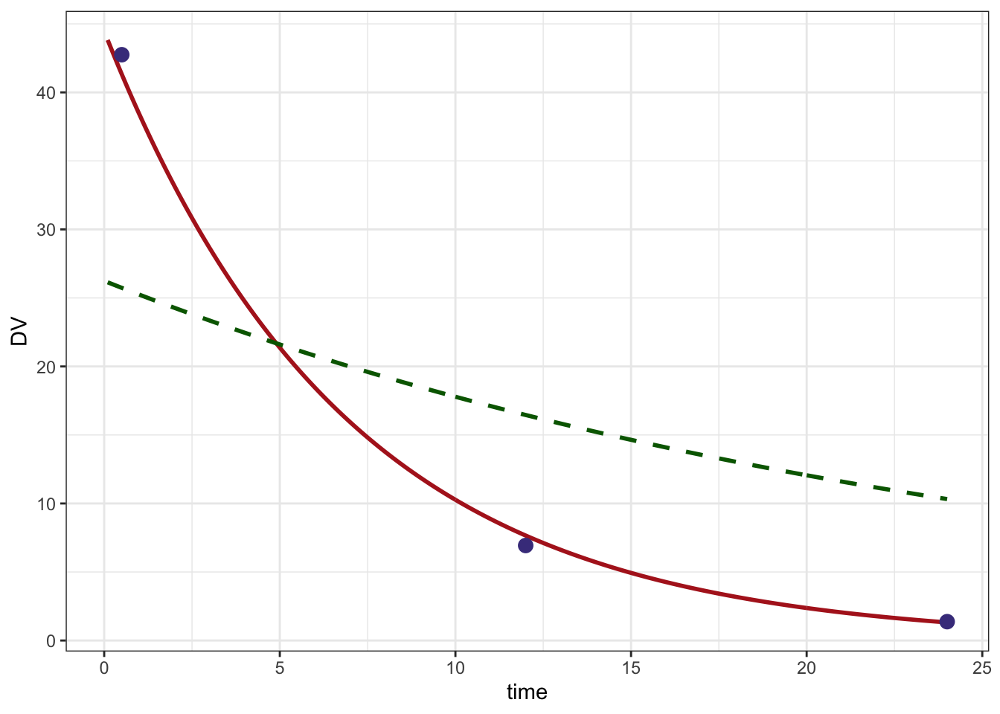

This tutorial illustrates how to do MAP Bayes estimation with mrgsolve.
The setup was adapted from an existing project, where only a single individual was considered. With some additional R coding, it could be expanded to consider multiple individuals in a single run.
1 About
This document shows how to simulate some data and then re-estimate the MAP Bayes estimates. For clarity, just the optimization piece has been included in a separate doc map_bayes_example.html.
2 One compartment model, keep it simple for now
The model specification code below is for a one-compartment model, where
mrgsolvewill calculate the amount inCENTfrom closed-form equationsFor now,
$OMEGAand$SIGMAare filled with zeros; we’ll update it laterThe control stream is set up so that we can either simulate the etas or pass them in.
ETA(1)andETA(2)are the etas thatmrgsolvewill draw from$OMEGA.ETA1andETA2are fixed and known at the time of time of the simulation. The optimizer will search for values ofETA1andETA2that optimize the objective function. Note thatETA1andETA2must be in the parameter list for this to workWe do a trick where
CL=TVCL*exp(ETA1+ETA(1));The assumption is that eitherETA1(simulating) is zero orETA(1)is zero (estimating)We table out
ETA(1)andETA(2)so we can know the true (simulated) values (but not both zero and not both non-zero)DVis output as a function ofEPS(1); this will be zero until we add in values for$SIGMA. But when we’re estimating, we need to make sure thatEPS(1)is zero; the prediction shouldn’t have any randomness in it (just the individual prediction based on known etas)
code <- '
$SET request=""
$PARAM TVCL=1.5, TVVC=23.4, ETA1=0, ETA2=0
$CMT CENT
$PKMODEL ncmt=1
$OMEGA 0 0
$SIGMA 0
$MAIN
double CL = TVCL*exp(ETA1 + ETA(1));
double V = TVVC*exp(ETA2 + ETA(2));
$TABLE
capture DV = (CENT/V)*(1+EPS(1));
capture ET1 = ETA(1);
capture ET2 = ETA(2);
'
mod <- mcode_cache("map", code)3 First, simulate some data
$OMEGA and $SIGMA;
- The result may look better or worse depending on what we choose here
- These will be used to both simulate and fit the data
- The
cmatcall makes a2x2matrix where the off-diagonal is a correlation (?cmat).
Just a single dose to CENT with an events object ::: {.cell}
:::
Take these times for concentration observations ::: {.cell}
:::
Simulate
- Here, we’re populating
$OMEGAand$SIGMAso that the simulated data will be random - It is important to
carry.outall of the items that we will need in the estimation data set (doses, evid, etc) - Using
end=-1withadd=samplmakes sure that we only get observation records at the times listed insampl
set.seed(1012)
sim <-
mod %>%
ev(dose) %>%
omat(omega) %>%
smat(sigma) %>%
carry_out(amt,evid,cmt) %>%
mrgsim(end=-1, add=sampl)
simModel: map
Dim: 4 x 8
Time: 0 to 24
ID: 1
ID time evid amt cmt DV ET1 ET2
1: 1 0.0 1 750 1 41.067 0.5196 -0.2728
2: 1 0.5 0 0 0 42.749 0.5196 -0.2728
3: 1 12.0 0 0 0 6.932 0.5196 -0.2728
4: 1 24.0 0 0 0 1.375 0.5196 -0.27284 Create input for optimization
- Using the simulated data as the starting point here
- Set
DVtoNAfor the dosing record
Create a data set to use in the optimization
- We need to drop
ET1andET2since they are in the parameter list
5 Optimize
This function takes in a set of proposed \(\eta\)s along with the observed data vector, the data set and a model object and returns the value of the EBE objective function
When we do the estimation, the fixed effects and random effect variances are fixed.
The estimates are the \(\eta\) for clearance and volume
Arguments:
etathe current values from the optimizerycolthe observed data column namedthe data setmthe model objectdvcolthe predicted data column namepredifTRUE, just return predicted values
5.1 What is this function doing?
- get the matrix for residual error
- Make sure
etais a list - Make sure
etais properly named (i.e.ETA1andETA2) - Copy
etainto a matrix that is one row - Update the model object (
m) with the current values ofETA1andETA2 - Simulate from data set
dand save output tooutobject - If we are just requesting predictions (
if(pred)) return the simulated data - The final lines calculate the EBE objective function; see this paper for reference
- Notice that the function returns a single value (a number); the optimizer will minimize this value
mapbayes <- function(eta,d,ycol,m,dvcol,pred=FALSE) {
sig2 <- as.numeric(sigma)
eta <- as.list(eta)
names(eta) <- names(init)
eta_m <- eta %>% unlist %>% matrix(nrow=1)
m <- param(m,eta)
out <- m %>% zero_re() %>% mrgsim(data=d,output="df")
if(pred) return(out)
# http://www.ncbi.nlm.nih.gov/pmc/articles/PMC3339294/
sig2j <- out[[dvcol]]^2*sig2
sqwres <- log(sig2j) + (1/sig2j)*(d[[ycol]] - out[[dvcol]])^2
nOn <- diag(eta_m %*% omega.inv %*% t(eta_m))
return(sum(sqwres,na.rm=TRUE) + nOn)
}5.2 Initial estimate
- Note again that we are optimizing the etas here
Fit the data
newuoais from theminqapackage- Other optimizers (via
optim) could probably also be used
Arguments to newuoa
- First: the initial estimates
- Second: the function to optimize
- The other argument are passed to
mapbayes
Here are the final estimates ::: {.cell}
[1] 0.4995400 -0.3274858:::
Here are the simulated values ::: {.cell}
# A tibble: 1 × 2
ET1 ET2
<dbl> <dbl>
1 0.520 -0.273:::
6 Look at the result
A data set and model to get predictions; this will give us a smooth prediction line
Predicted line based on final estimates ::: {.cell}
ID time DV ET1 ET2
1 1 0.1 43.82331 0 0
2 1 0.2 43.18567 0 0
3 1 0.3 42.55731 0 0
4 1 0.4 41.93809 0 0
5 1 0.5 41.32789 0 0
6 1 0.6 40.72656 0 0:::
Predicted line based on initial estimates ::: {.cell}
initial <- mapbayes(init,ycol="DV",pdata,pmod,dvcol="DV",pred=TRUE) %>% filter(time > 0)
head(initial) ID time DV ET1 ET2
1 1 0.1 26.13954 0 0
2 1 0.2 26.03811 0 0
3 1 0.3 25.93707 0 0
4 1 0.4 25.83642 0 0
5 1 0.5 25.73616 0 0
6 1 0.6 25.63629 0 0:::
Plot ::: {.cell}
ggplot() +
geom_line(data=pred, aes(time,DV),col="firebrick", lwd=1) +
geom_line(data=initial,aes(time,DV), lty=2, col="darkgreen", lwd=1) +
geom_point(data=data %>% filter(evid==0), aes(time,DV), col="darkslateblue",size=3) +
theme_bw()
:::